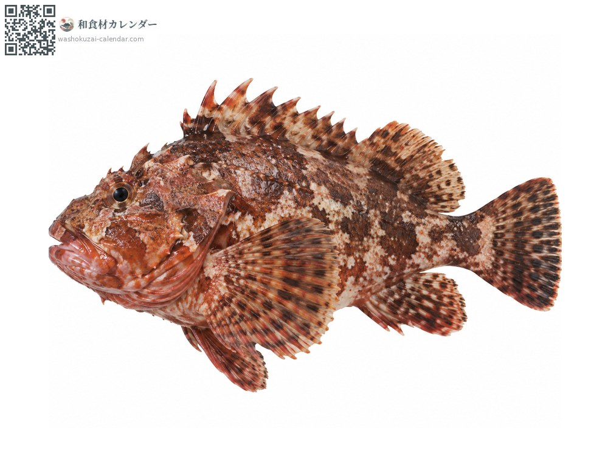
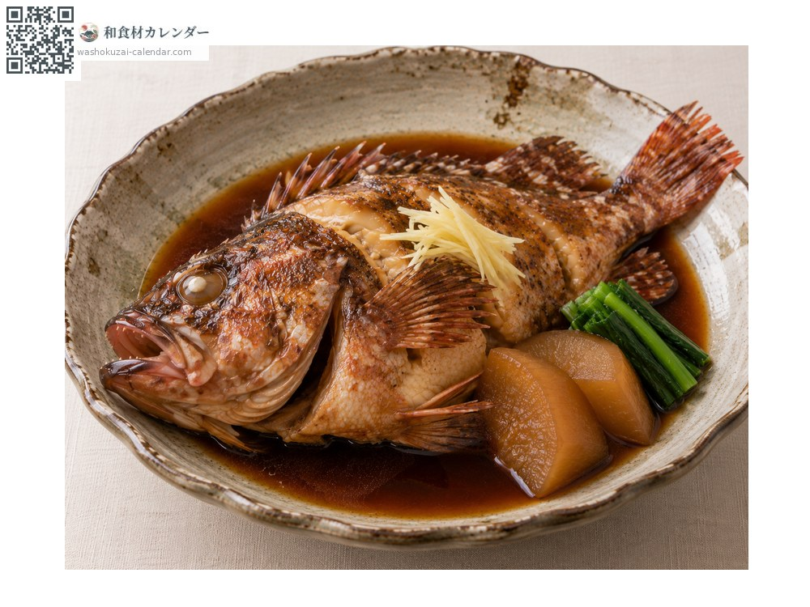
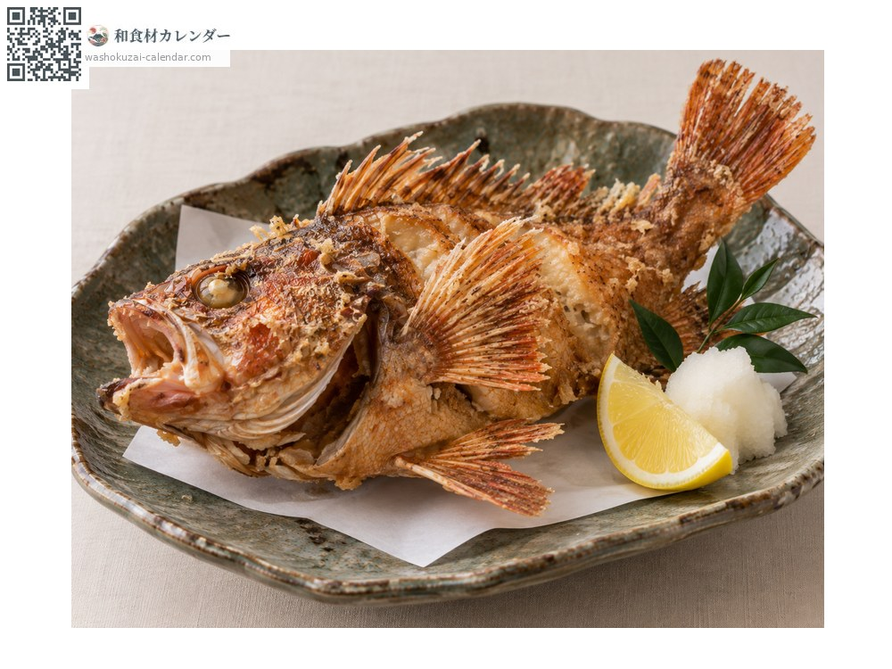
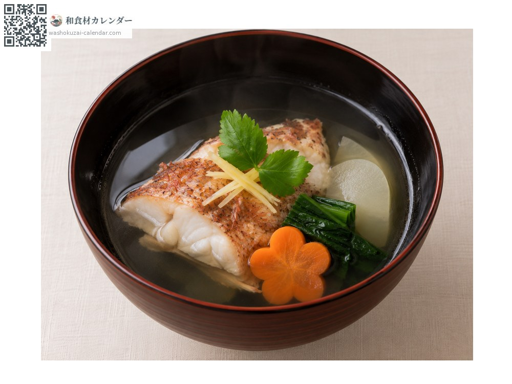
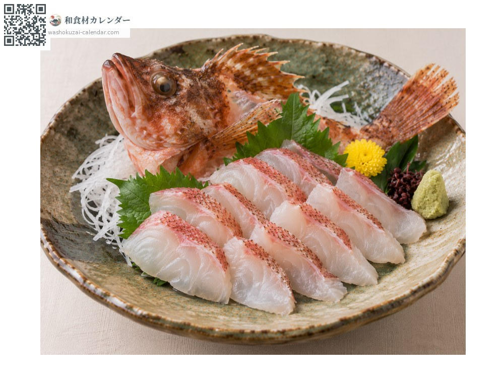

海鮮
石狗公（笠子）
カサゴ かさご kasago
別名kasago、gashira、arakabu
當令時期為1月、2月、3月、11月、12月

當令時期
1月
2月
3月
4月
5月
6月
7月
8月
9月
10月
11月
12月
當令有供應
料理方式

甜醬油燉煮
最經典的做法。甜鹹燉到魚肉輕輕鬆開。

日式炸物
整條油炸，連骨頭都能吃。

清湯
骨頭能熬出濃郁的湯頭，做味噌湯也很合。

生魚片
夠新鮮可生食。白肉通透且有彈性。
挑選方式
體色鮮豔、魚鰓紅潤。頭大、魚身緊實。
保存方式
取出內臟後冷藏。肉質緊實，可放兩到三天。
主要產地
小知識
各地叫法很多，例如ガシラ、アラカブ、ボッカ等。頭大所以可食部位少，但魚肉緊實、鮮味濃厚。牠是卵胎生的魚，直接產下幼魚而非產卵。